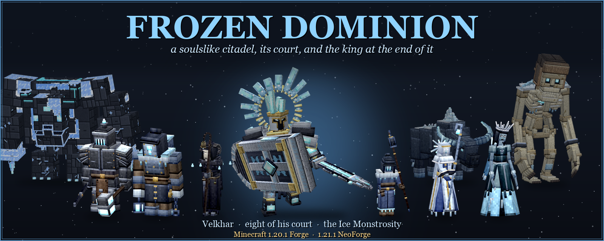
FROZEN DOMINION
A soulslike citadel for Minecraft 1.20.1 (Forge) and 1.21.1 (NeoForge): a ruin in the snow, five stages of halls underneath it, eight of the king's court still at their posts, a prisoner chained below them all, and a king who has not stood up in a thousand winters.
Somewhere on the snowy plains the snow stops melting. Above ground there is only a ruin, a gate and a tower. Everything else is underneath: prisons, crypts, a court, a storm held in a gallery, and the deep water under all of it. Seven of the court never left their posts. Something enormous is chained beneath them. And at the far end of it, on a throne of ice, sits Velkhar, the Hollow Sovereign.
“A thousand winters I have held. Show me you are worth the thaw.”
At a glance
- A four-phase final boss: the Bulwark King, the Stormblade, the Twin Blades and the Hollow Magus. Each one is a different fighter, and the last one takes the fight above the clouds.
- Eight minibosses, the king's court. Each is its own puzzle with its own room and its own rules, and each leaves something found nowhere else.
- A second boss, the Ice Monstrosity. Beat it, and later you can wake one of your own, tame it and ride it.
- A citadel built as a journey: keys that know their doors, runes hidden behind false walls, traps, statues that wake up, chained chests, a parkour over a chasm of spikes.
- A forge to work towards: the Frost Anvil, Everfrost, Kingsrime, and four legendary weapons forged from what the court leaves behind.
- Every attack is learnable. There is a tell, a committed frame and a window you can punish. There is a dodge roll to go through blows rather than away from them.
- Every boss and miniboss has its own entrance and death scene and a health bar of its own. The king speaks, and so does his court.
- Frost Shrines before the halls: kindle one, and if you fall anywhere in the citadel you rise there with what you carried.
- Built for friends too: every boss grows with the party, every attack can go for any of you, and each of you takes your own trophy.
Getting there
Two smaller ruins in the snow were left by the people who tried this before you. Start there.
- The expedition camp: its lectern tells how the story began, and its chest holds the Hearth Amulet. Without it the citadel's Chill will not let go of you.
- The watchtower: the Lamplighter still keeps its lantern. Under the lantern he guards a chained chest holding the Crownbreaker, a wedge forged for one job, and the key to the descent.
⚠ Take the Stormcrown
While the Stormcrown burns with ice, the citadel belongs to the king:
- his servants are stronger;
- the stone will not yield to your pick - and it keeps its hold until the king is dead;
- and the cold never lets go.
Drive the Crownbreaker into it and its light changes colour. From then on it burns for you.
The citadel
Under the ruin lies one way down, and five stages of halls below it: the Prisons, the Crypts, the Court, the Storm and the Depths. Nothing on the way to the king is optional. Every stage hides one rune behind a wall that is not a wall. The five runes, three shards carried by the Vault Wardens and the Seal Core are put together into the Sigil of the Hollow King, and only the Sigil opens the Prison Gate.
- Doors and keys. Every door has its key, and the key knows its door by name. Guards and courtiers carry them, and some lie in chests along the way. Some walls lie: look for a stone worn smooth by touch.
- Chained chests. Each stage keeps its best things bound in chains. A Shackle Key opens one and breaks in the lock.
- Nests. They breed servants while someone is near. The Crownbreaker splits them, and the shards they leave are what keys and ingots are made from.
- Statues. Not every statue is stone. The ones that tremble as you look at them are about to rise, unless you break them first.
- Traps. Cracked plates and icicles, arrow slits that keep a rhythm, a treasury whose guard only pretends to be stone.
- Frost Hearts. In some halls a heart pumps cold. Away from a burning hearth you freeze, slowly at first and then all at once, and the gates will not rise while it beats.
- The Rift. A way of pillars and brittle ice over a chasm of spikes, there and back, with maws in the walls that lose patience and axes swinging over the gaps.
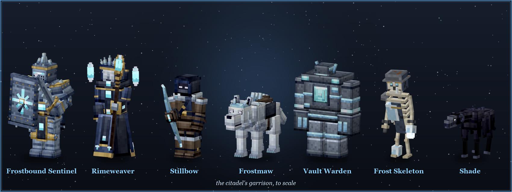
The garrison
- Frostbound Sentinel: nothing gets through its shield from the front, but the shield has a limit and an axe breaks it. From the side and behind it is only plate. Several march in a line.
- Rimeweaver: works for the rest, warding and healing them. Every spell takes a moment, and broken half-way it shatters in its hands. Kill it first.
- Stillbow: never stands still. Frost on the ground around you means a volley is about to fall.
- Frostmaw: the pack hunts in turns. One bites while the rest circle behind you. It crouches and growls before the pounce.
- Vault Warden: glacial brick and black iron. Spears for whoever keeps their distance, the hammer for whoever comes close. Inside it is something the Sigil needs.
- Frost Skeleton: harmless alone, but never alone. Broken, it pulls itself together again, unless you give it no time. Fire does not like it.
- Shade: you hear it before you see it, and you see it only by firelight.
The court
Eight of the king's court still keep their halls. Each is a fight of its own, with its own bar and its own way to lose. Each leaves behind a part found nowhere else.
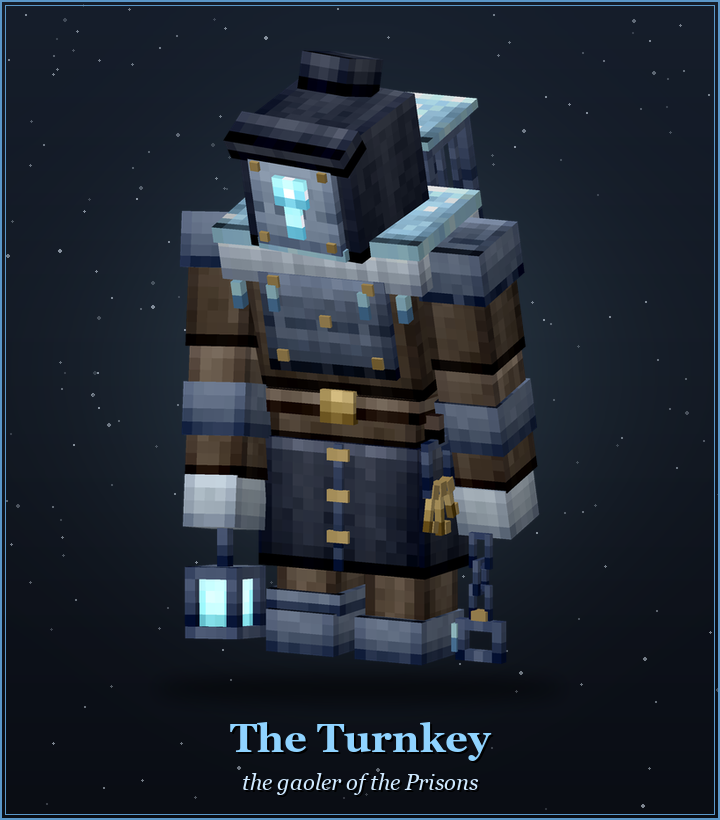
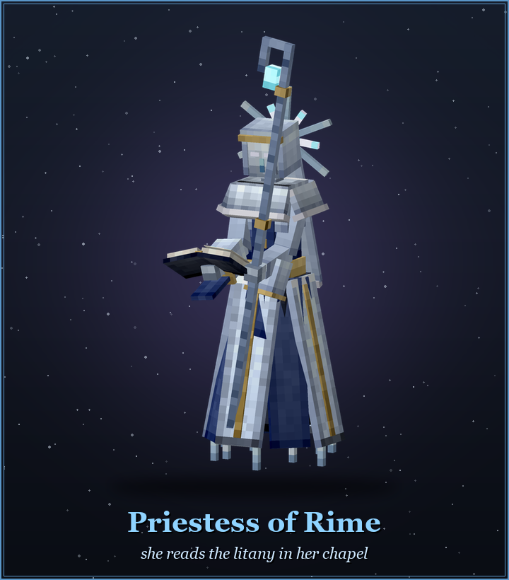
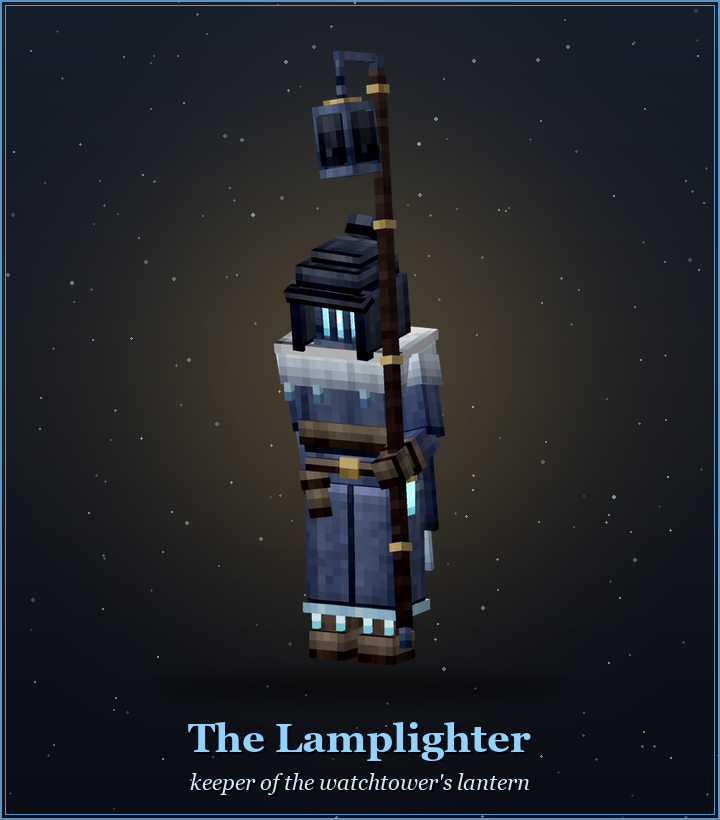
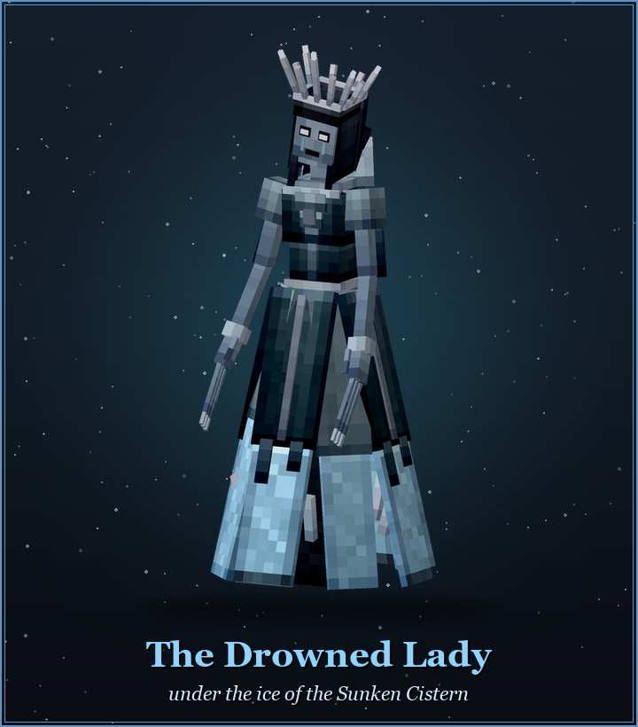
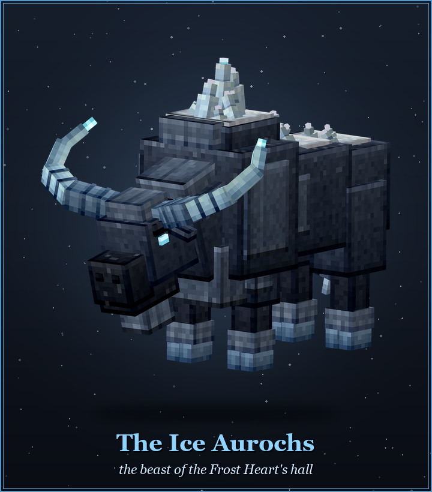
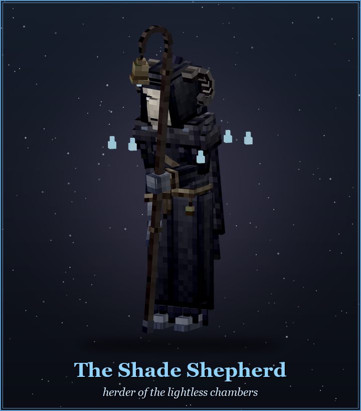
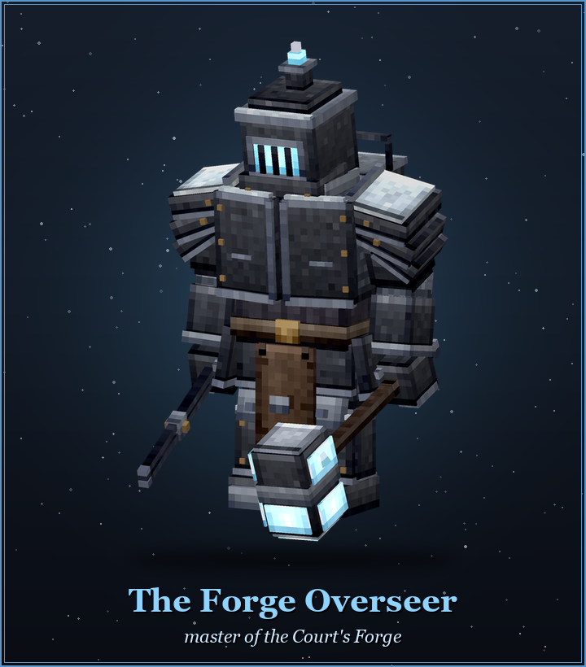
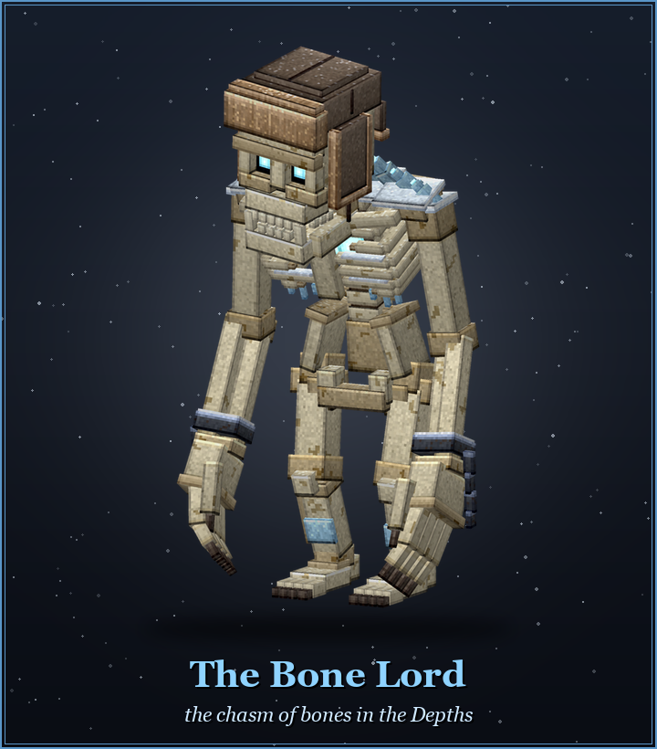
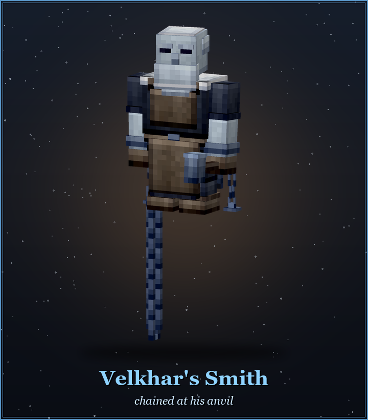
- The Turnkey still walks his cells. Whoever his manacle reaches, he drags in. When his strength starts to fail he shakes his keys, and the cells let out their prisoners.
- Priestess of Rime reads her litany at the altar, and nothing touches her while she reads. The floor lights with runes, and at the Amen everything that does not stand on one freezes. When there are several of her, the true one holds the book.
- The Lamplighter: light shields him and hurts you, and shadow works the other way round. The piers throw the only shadow in his dome, so lure him there. The weaker he gets, the harder his lantern's beam looks for you.
- The Drowned Lady fights on ice over black water, and she decides which ice breaks. Only the plates with runes cut into them are safe. Her shadow glides under the ice, and where it stops, hands rise. When she wails, the ice starts to go in sheets.
- The Ice Aurochs hates fire: it tramples the hearths and anyone warming themselves at them. At full speed it cannot turn, and the free-standing pillars are harder than its skull.
- The Shade Shepherd: his hall is hearths and darkness. He puts the fire out, and in the dark he and his herd are deadlier. The lights on his shoulders are the herd, and they go out as you thin it.
- The Forge Overseer quenches his hammer in a trough. He is open while he does it, but afterwards every blow freezes and hits harder. The water is not his: take it with a bucket before he gets there. In the cell next door, his smith waits for him to stop watching.
- The Bone Lord gathers himself from his heap over a chasm of fog and hunts you over the bridges between the pillars. If he catches you, that is the end. He trips on the run - over holes, at sharp turns, when an arrow takes him in the legs - so strike while he is down. And watch the pillars: the dead climb up them out of the fog.
The prisoner
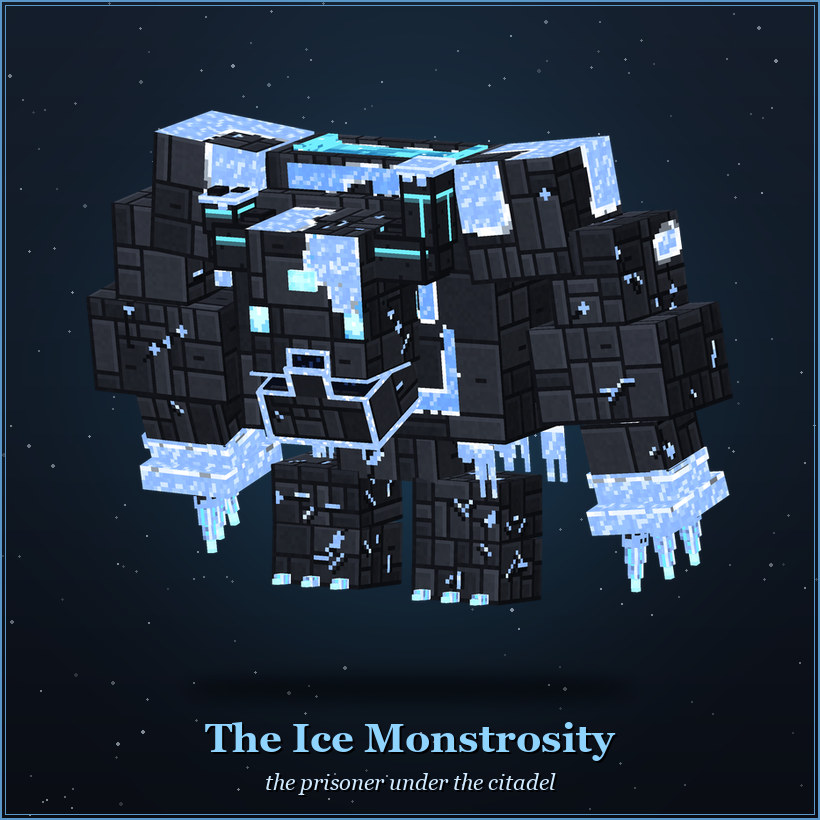
Behind the Prison Gate, in the largest hall of the citadel, stands a statue in the ice. It is not a statue. The Ice Monstrosity is a completely different problem from the king: a colossus of ice that charges, grabs, roars the ceiling down and buries the floor in snow. It keeps the key to the throne room.
- When it charges, it shows its way on the floor. Get off that line. A colossus at full tilt meets a pillar badly, and the vault over the pillar does not like being shaken.
- When it roars, ice falls from the ceiling, and that ice does not choose whom it falls on.
- You can cross the wall of snow if you roll through it. Nobody walks out of its grip.
- When it falls, it leaves its head. Build a statue of blackstone and Sovereign Ice, put the skull on top, and give it the Heart of the Silent Winter. What wakes will listen only to you. Velkhar's smith forges a saddle for its back: from the saddle it stomps, sweeps its arm, and - with the stomp held to a full bar - charges.
The king
Everything below is a spoiler. The fight is better the first time if you learn it yourself.
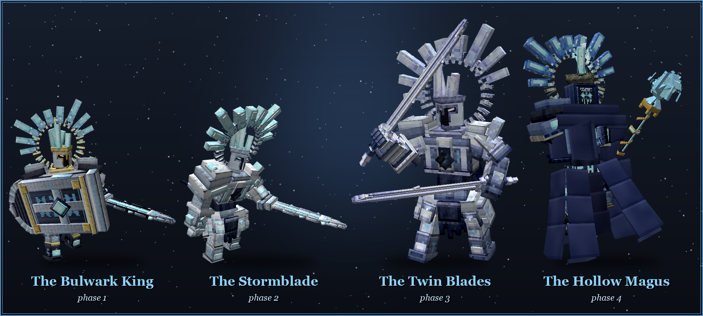
Phase One: The Bulwark King
Shield and greatsword, and he knows how to use the shield. Almost nothing gets through the front of his guard, but the king does not always turn. Go round it, or break it. Hit the guard often enough and he stops blocking and answers. He drags you out of safety with a chain, comes down on you from above, and splits the floor in a lane you have to step out of. He raises his sword, and three swords of ice fall one after another where you stand. He throws the shield like a discus, out and back, and while it is away his front is open. Arrows glance off the shield and off the plate on his chest and shoulders; anywhere else they bite.
Phase Two: The Stormblade
“The crown was always a cage. Let the storm speak.”
The shield goes, and so does the patience. A gauntlet combo that scoops you up and carries you down the hall, blinks behind you mid-swing, and copies of himself that hunt you on their own. Once, half way down this phase, he calls the weather, and his blizzard swallows the hall in white. Out of it he comes running at you, or a copy of him does. Listen for iron in the snow: strike the king on his run and he stumbles, strike a ghost and the storm bites back. Once, he raises a spire of ice, forges his blade into a crossbow at the top and empties a volley into the room.
Phase Three: The Twin Blades
The sword comes apart into two, the guard is gone, and both hands swing. He drinks from every hit that lands, so trading blows with him is not a race. The twin blades have to catch their breath, though, and that is your opening. And a shield raised just as a blow comes in, not before, turns it and throws him off his dance.
Phase Four: The Hollow Magus
“You see it now. There is no king left. Only winter.”
He never touches the floor again. A wand of ice is drawn out of the room's own cold, rings of crystal turn around him, and the fight moves to range: seeking shards, a beam he breathes in before he lets it out, spears thrown from a cloud of his own making. He has nothing left to turn a swing with, and he does not like arrows.
And then he takes you up. He seizes one of you, a storm opens round him, and he rises through the roof. Above the clouds the fight goes on over floes of ice above a vortex, behind walls of charged cloud. The ice cracks, melts and freezes again, and the storm turns around you. His anchors hold him up there, and while even one of them stands nothing reaches him. Break them and bring him down. Fall off the ice and the gale throws you back once; after that, every fall costs a Gale Feather.
“If I must end, then everything ends with me. THE LAST WINTER FALLS.”
The forge and what you get for it
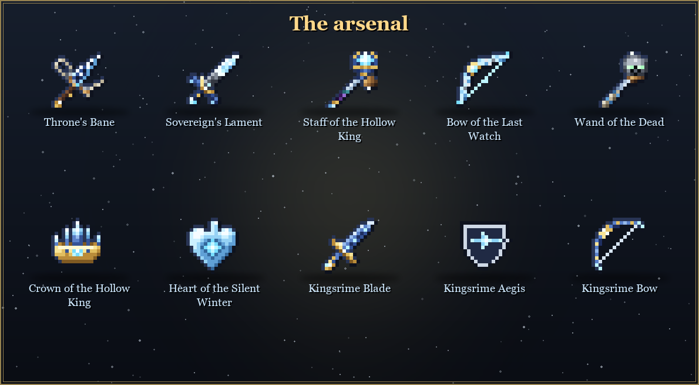
- The Frost Anvil stands here and there along the way. It has a grid like a crafting table, plus one socket apart, the core, for what changes a thing from within. Recipes show in JEI.
- Everfrost is the first rung: shards, crystals and ingots, then the sword, the bow, the shield and the armour.
- Kingsrime is reforged from Everfrost, but it takes a seal, and only the prisoner beneath the citadel leaves those. A Kingsrime sword is not only a sword.
- Tempering: the creatures' fangs, rivets, fletchings, prisms and cores each teach the metal something different. A piece takes one temper only.
- Four legendary weapons: Throne's Bane, Sovereign's Lament, the Staff of the Hollow King and the Bow of the Last Watch. Each is forged from two courtiers' parts, Kingsrime, and a Crown Shard in the core. The king leaves exactly three shards, so one weapon always waits for the next citadel.
- The Wand of the Dead: the smith forges its fitting, and some of the dead carry the rest.
- The Sovereign's hoard, in a chained chest in the middle of the throne room: the Crown of the Hollow King (immunity to freezing and Frostbite), the Heart of the Silent Winter (eat it for two hearts and cold resistance forever, or give it to the ice), a music disc, Sovereign Ice, Everfrost, and the three Crown Shards.
- Five enchantments known only here: Shattering, Frostbite Edge, Hearth Ember, Sure Footing and King's Echo.
Recipes
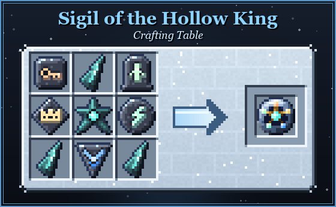
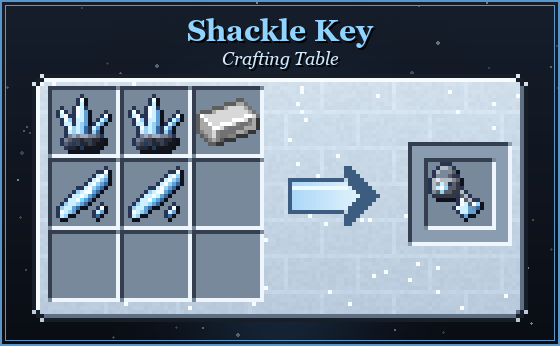
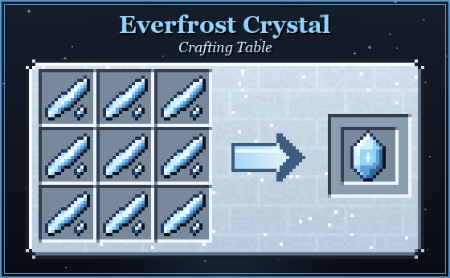
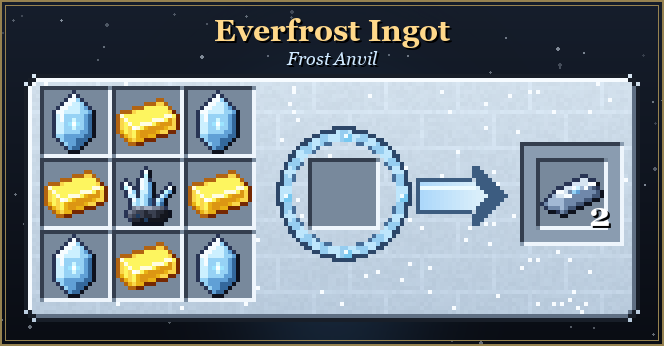
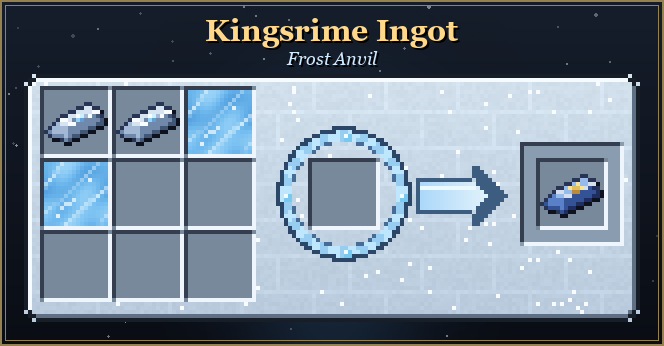
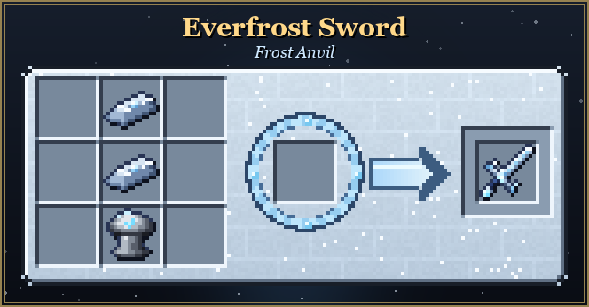
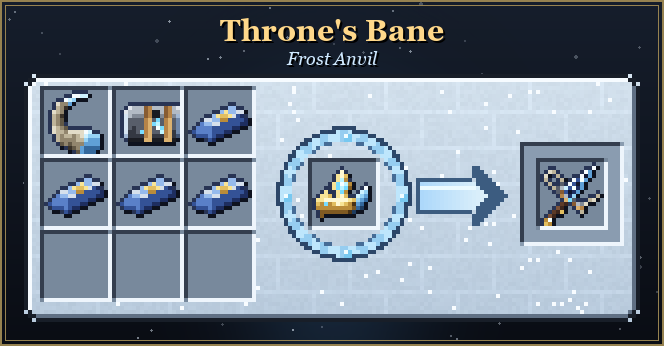
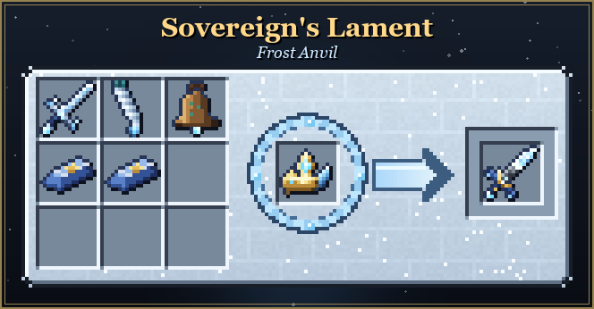
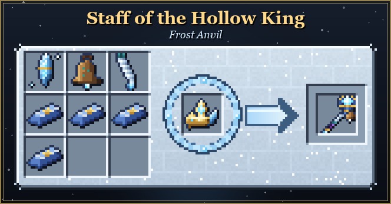
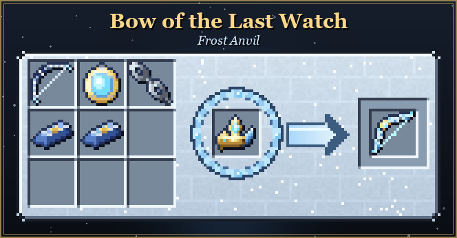
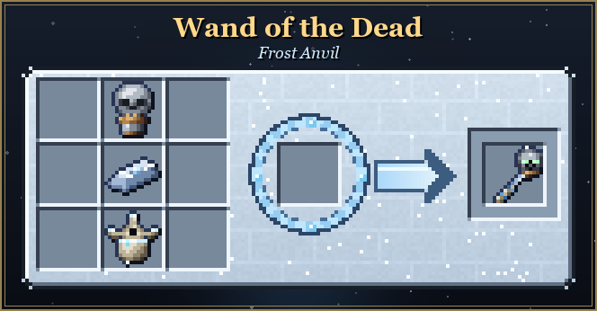
Staying alive
- The dodge roll has its own key (X by default). For a short moment nothing aimed at you lands. The cold, water and a fall still do, and you will not roll hungry.
- The cold has three faces. Frostbite is what the king's servants leave in you: it slows, it bites, and it will not let you heal. The Chill is laid by the Stormcrown on everyone who carries no fire at their breast. Heart's Frost comes from the Frost Hearts, and only a burning hearth helps against it.
- The Chronicle of the Citadel (with Patchouli) collects what three expeditions left behind: letters, sketches and notes in the margins. It opens slowly. When you see something for the first time, come back, because someone has probably written about it already.
Iron's Spells 'n Spellbooks
Optional, and the mod runs the same without it. With it installed, every piece of Kingsrime armour adds 15% ice spell power, and the Staff of the Hollow King adds 20% ice spell power and 150 mana.
A separate add-on, Iron's Spellbooks: Frozen Dominion, is out as a project of its own: eight ice spells, scrolls in the citadel's chests, spells bound into its weapons, and the Priestess's Rime Breviary.
Notes
- Minecraft 1.20.1 (Forge) and 1.21.1 (NeoForge). Requires GeckoLib and Curios.
- Optional: Patchouli (the Chronicle), Player Animator (body animations for the legendary weapons and the roll), Better Combat (attack patterns for the weapons), JEI (Frost Anvil recipes), Iron's Spells 'n Spellbooks (see above).
- The citadel generates on snowy plains. Built for endgame gear. It is meant to be hard, and it is meant to be fair.
- In active development. Feedback on balance, and on anything that reads unclearly, is genuinely wanted - report it on GitHub.
- Source: github.com/Jastkub/FrozenDominion. All Rights Reserved; modpacks on CurseForge are welcome.
- Like the citadel? Support it on Patronite.
- Music: several tracks by SunixMuz (freesound.org), licensed under CC BY 4.0. The full list is in the mod's CREDITS.txt.
“...at last. The snow... may rest.”